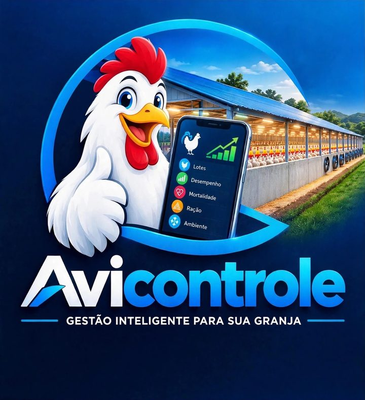
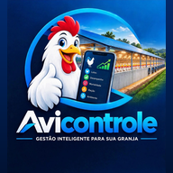

Carregando…

AviControleUse o e-mail e a senha que você recebeu.
Toque em Editar para corrigir um dia. O consumo de ração e os indicadores são recalculados.
Toque em Editar para mudar os dados de um galpão, ou adicione um novo.
Seus dados ficam salvos na nuvem automaticamente, em qualquer aparelho em que você entrar. Se quiser, guarde também uma cópia no celular.
Só você vê esta parte. Para renovar, mude a data e toque em Salvar.
Todas as cargas recebidas nos lotes atuais de todos os galpões.
AviControle, acompanhamento de lotes de frango de corte. Projeções baseadas no ritmo real do lote e na curva padrão da linhagem; servem de apoio e não substituem a avaliação técnica no galpão.